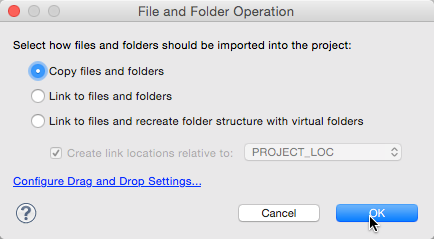
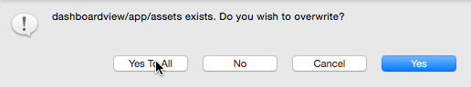

Alloy Test Apps
The Alloy GitHub repository includes a number of small test applications (github.com/appcelerator/alloy/tree/master/test/apps) that demonstrate various Alloy features.
To build and run one of the test applications, do the following:
-
Clone the Alloy project locally.
-
Create a new Alloy project, either using Studio or the CLI tools.
-
Copy the contents of the desired sample folder into the newly created Alloy project's app/ folder, over-writing any existing files.
-
Build and run the application on a device, simulator, or emulator.
The sample apps are organized in several folders representing the following categories:
-
User Interface — Samples in the ui/ folder demonstrate use of several Titanium UI objects in an Alloy project.
-
Advanced — Samples in the advanced/ folder demonstrate advanced Alloy topics and approaches, such as advanced styling, using modules, using CommonJS modules, and more.
-
Basics — Samples in the basics/ folder demonstrates basic Alloy concepts.
-
Alloy Test Models — Samples in the alloy/test/apps/models/ folder demonstrates using models, collections, and data binding in Alloy.
-
Widgets — Samples in the widgets/ folder demonstrates how to create and use Alloy widgets, which are self-contained Alloy components that can easily be shared.
Note that some samples demonstrate platform-specific features that only run certain platforms.
Importing and Running an Alloy Test App
To import one of the sample application, first clone the Alloy GitHub project locally:
git clone https://github.com/appcelerator/alloyOnce you've selected a test app to build and run, you first create a new "blank" Alloy project, and then copy the contents of the sample folder into the /app folder of the newly created Alloy project. You can do this either using Appcelerator Studio or on the command line using the CLI tools, as explained below.
Using the CLI tools
Starting with Appcelerator CLI 5.0.0 or Alloy 1.7.6, you can generate a new Alloy project using a test application from the Alloy Github repo. (The source code is copied from the global or local install of the Alloy npm package.)
To create an Alloy application based on a test application, first create a skeleton Titanium project, then run the Alloy new command with the --testapp <path_to_test_app> option. Pass the option the relative path to the test application after the alloy/test/apps path. For example, if you want to use the picker test application, run alloy new --testapp ui/picker from a skeleton Titanium project.
appc new -t titanium --classic -i com.appc.picker -n AlloyPickercd AlloyPickerappc alloy new --testapp ui/pickerPrior to Alloy 1.7.6, you need to manually copy the source code to the new Titanium project:.
appc new -t titanium -n picker_test --id com.yourdomain -d . -url yourdomain.com -p allcd picker_test/cp -r <alloy_repo>/test/apps/ui/picker/ app/.appc run -p iosUsing Appcelerator Studio
To build a sample using Appcelerator Studio, first create a new Alloy project by selecting File > New > Mobile App Project.

Drag and drop the contents of the desired test app folder from the desktop into the new project's app/ folder in Project Explorer.

When prompted, select Copy file and folders option in the File and Folder Operation dialog and click OK.

Select Yes To All when asked if you want to overwrite files in the target folder.

You can now build or run the application on a target device, simulator or emulator.